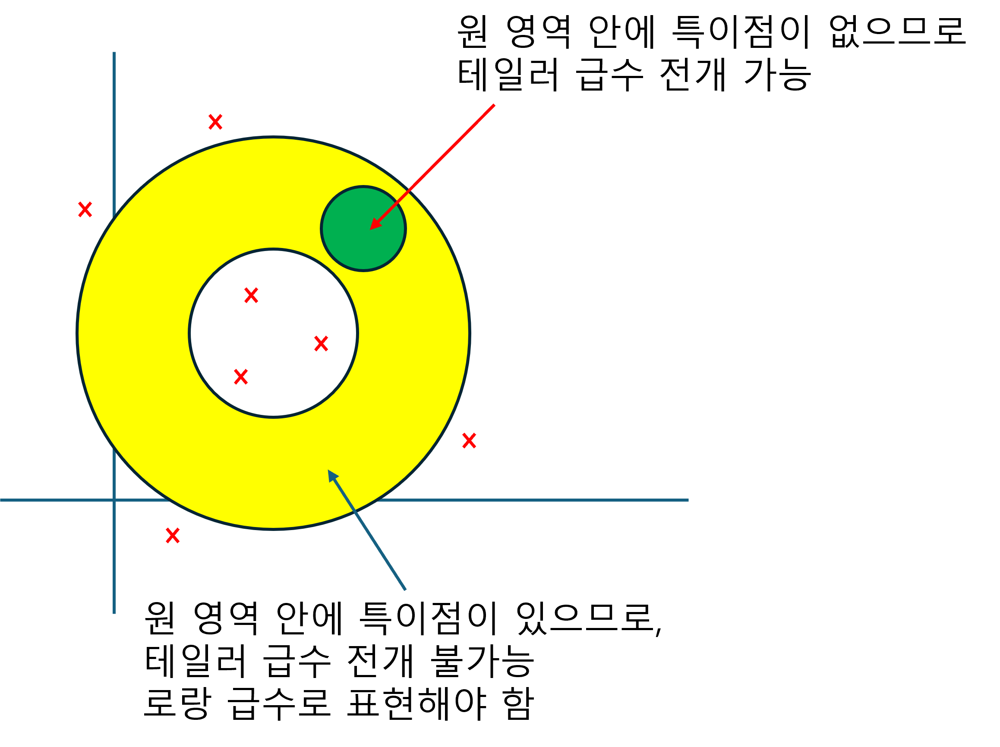

(b) Lourent's series

- 모델링 최외각의 안쪽 영역내에서 특이점이 존재하지 않을 경우, 테일러 급수를 사용한다.
- 모델링 최외각의 안쪽 영역내에서 특이점이 존재할 경우, 로랑급수를 사용한다.
- 테일러 급수는, 특이점의 영향이 없는 순수 수렴가능한 영역 자체를 모델링 하는 것이다.
- 로랑급수는 순수 수렴 가능한 영역의 모델링(테일러 급수, 다항 함수) + 특이점이 수렴 가능한 영역에 미치는 영향력의 모델링(유리함수)을 말한다.
1. 로랑 급수
지금까지 함수의 상태 벡터 $|f\rangle$를 연속기저(위치기저) $|x\rangle$를 사용하여 표현하였다. 복소수로 확장하여, $|f\rangle$를 $|(z-z_0)^n\rangle$을 사용한 이산기저로도 표현할 수 있으며, 기저의 좌표값을 로랑급수라고 한다.
$$ f(z)=\sum_{n=-\infty}^{\infty} b_n (z-z_0)^n, \quad\text{where, } b_n =\frac{1}{2\pi i}\oint dz (z-z_0)^{-n-1}f(z) $$proof)
$|(z-z_0)^n\rangle=|n\rangle$ 이라고 하자. 그러면 함수를 위치 기저로 표현하면 $\langle z|n\rangle=(z−z_0)^n$ 이다.
$$ |f\rangle =\sum_{n=-\infty}^{\infty} b_n |n\rangle $$$b_n$ 이 무엇인지 알기 위해서는, $|n\rangle$의 쌍대기저 $\langle n|$가 무엇인지 알아야 한다.
$$ \langle m|n\rangle =\delta_{mn} $$즉, 위 식을 만족하기 위한 $\langle n|$를 찾아야 한다. 쌍대기저(범함수)는 아래를 만족해야한다.
$$ \langle m|n\rangle =\delta_{mn} =\oint dz w(x){g_m^\ast(z)(z-z_0)^n} =\oint dz (z-z_0)^{k} $$코시의 적분 정리에 의해서,
$$ \oint dz (z-z_0)^{k} =\begin{cases} (k=-1) & 2\pi i\\ (k\ne-1) & 0 \end{cases} $$따라서,
$$ w(x) =\frac{1}{2\pi i}\cdot\frac{1}{z-z_0} $$$$ \langle m|n\rangle =\frac{1}{2\pi i}\oint \frac{dz}{z-z_0} \{ (z-z_0)^{-m}(z-z_0)^n \} $$쌍대기저는 아래와 같이 표현할 수 있다.
$$ \langle m| =\frac{1}{2\pi i}\oint \frac{dz}{z-z_0} (z-z_0)^{-m}\langle z| $$또한, $b_n$은 다음과 같다.
$$ b_n =\langle n|f\rangle =\frac{1}{2\pi i}\oint \frac{dz}{z-z_0} (z-z_0)^{-n}f(z) $$2. 테일러 급수
테일러 급수는 로랑급수의 특별한 경우로, 함수 $f(z)$가 점 $z_ 0$를 포함하는 경로 $\mathbf{C}$ 내부 모든 곳에서 해석적일 경우 적용할 수 있다.
$$ f(z)=\sum_{n=0}^{\infty} b_n (z-z_0)^n, \quad\text{where, } b_n =\frac{f^n(z_0)}{n!} $$proof)
함수 $f(z)$가 점 $z_ 0$를 포함하는 경로 $\mathbf{C}$ 내부 모든 곳에서 해석적임을 이용한다.
(1) $n<0$
$n=-1$ 인 경우,
$$ b_{-1}=\frac{1}{2\pi i}\oint dz f(z)(z-z_0)^0 =0 $$따라서, $n<0$ 일때, 모두 해석적이므로,
$$ b_{n}=0 \,\, (n<0) $$(2) $n>0$
$$ b_n=\frac{1}{2\pi i}\oint \frac{dz}{z-z_0} (z-z_0)^{-n}f(z) $$$n>0$에서, 경로 $\mathbf{C}$ 내부 모든 곳에서 해석적이면, 코시의 도함수 공식을 사용할 수 있다.
$$ \frac{f^n(z_0)}{n!} =\frac{1}{2\pi i}\oint \frac{dz}{z-z_0} (z-z_0)^{-n} f(z) $$3. 매크로니 급수
매크로니 급수는 테일러 급수의 특별한 경우로, 함수 $f(z)$가 점 $z_ 0=0$를 포함하는 경로 $\mathbf{C}$ 내부 모든 곳에서 해석적일 경우, 적용할수 있다.
$$ f(z)=\sum_{n=0}^{\infty} b_n z^n, \quad\text{where, } b_n =\frac{f^n(0)}{n!} $$아래는 몇가지 중요(암기) 매크로니 급수를 보여준다.
$$ e^x =1+x+\frac{x^2}{2!}+\frac{x^3}{3!}+\cdots $$$$ \sin x =x-\frac{x^3}{3!}+\frac{x^5}{5!}-\frac{x^7}{7!}+\frac{x^9}{9!}+\cdots $$$$ \cos x =1-\frac{x^2}{2!}+\frac{x^4}{4!}-\frac{x^6}{6!}+\frac{x^8}{8!}+\cdots $$$$ \frac{1}{1-z} =1+z+z^2+z^3+\cdots,\quad\text{단, }|z|<1 $$example1) Expand $f(z)$ in a Laurent series valid for the following annular domains.
$$ f(z)=\frac{1}{z(z-1)} $$(a) $0<|z|<1$, (b) $1<|z|$, (c) $0<|z-1|<1$, (d) $1<|z-1|$, (e) $ 1<|z-2|<2$
example2) Expand $f(z$) in a Laurent series valid for $0<|z|$
$$ f(z)=e^{3/z} $$example3) Expand $f(z$) in a Laurent series valid for $0<|z|$
$$ f(z)=\frac{\cos z}{z} $$example4) Expand $f(z$) in a Laurent series valid for $0<|z-1|$
$$ f(z)=\frac{e^{z}}{z-1} $$